How to Deploy Kubernetes on Linode with Rancher 2.2
Updated by Linode Written by Linode
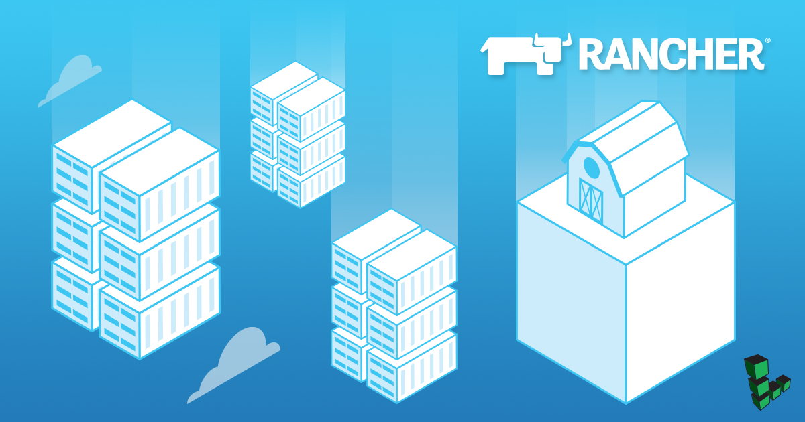
What is Rancher?
Rancher is a web application that provides an interactive and easy-to-use GUI for creating and managing Kubernetes clusters. Rancher has plugins for interacting with multiple cloud hosts, including Linode, and you can manage clusters across different hosting providers.
Rancher also maintains a curated list of apps that offer simple configuration options and a click-to-deploy interface. If you prefer to deploy your apps from a Helm chart, you can do that too.
Guide Outline
This guide will show how to:
Install Rancher on a Linode
Deploy a Kubernetes cluster on Linode using Rancher
Deploy an app from the Rancher app library to your cluster
Take advantage of the Linode CCM and CSI for Kubernetes via Rancher.
If you are not familiar with Kubernetes and container deployments, we recommend that you review our other guides on these subjects first.
CautionThis guide’s example instructions will create several billable resources on your Linode account. If you do not want to keep using the example cluster that you create, be sure to remove it when you have finished the guide.
If you remove the resources afterward, you will only be billed for the hour(s) that the resources were present on your account.
If You Already Run Rancher
If you already run Rancher and would like to start creating clusters on Linode, you can skip to the Activate the Linode Node Driver and Deploy a Kubernetes Cluster sections. The Deploy an App section will show how you can take advantage of the Linode CCM and CSI.
You may need to update your local Rancher installation to see the Linode node driver as an option.
Before You Begin
The Rancher web application will run on a Linode in your Cloud Manager account. Create and prepare the Linode that will run Rancher:
Create a Linode running Ubuntu 18.04 in the data center of your choice. Follow the Getting Started guide for instructions on setting up your server. It is recommended that you create a 2GB Linode or larger.
Note
You will be able to create Kubernetes clusters in any Linode data center from the Rancher UI, even if your Rancher Linode is located in a different region.The Rancher web application is run inside a Docker container, so you will also need to install Docker CE on your Linode. Follow the instructions for installing Docker CE on Ubuntu 18.04 and then return to this guide.
You will also need to generate an API token and prepare a domain zone:
Rancher will need a Linode APIv4 token from your Linode account in order to create your cluster. Review the instructions from the Getting Started with the Linode API guide to get a token.
The Set Up DNS section of this guide will assign an address to this guide’s example app. In order to do so, you must already have a domain zone created in the Linode Cloud Manager. If you do not have a zone created, review the instructions from our DNS Manager guide.
Note
If you haven’t purchased a domain name, then you can read along with the DNS section of this guide without implementing it in your own cluster.
Install Rancher
After you have your Linode up and running with Docker, you can then install and run Rancher:
Log in to your Linode via SSH:
ssh your_user@192.0.2.0Create a
rancherdirectory inside/opt; this folder will hold settings and keys for Rancher:sudo mkdir -p /opt/rancherRun Rancher:
docker run -d -p 80:80 -p 443:443 \ --restart=unless-stopped \ -v /opt/rancher:/var/lib/rancher \ rancher/rancher:latest- The
--restartoption ensures that the application will be restarted if the Linode is ever rebooted. - The
-voption binds the/opt/rancherdirectory on the Linode to the container so that the application can persist its data.
- The
Visit your Linode’s IP address in your browser. Your browser will display an SSL certificate warning, but you can bypass it.
Note
If you are interested in setting up an SSL certificate with Rancher, you may consider also creating an NGINX container with an SSL certificate that proxies traffic to the Rancher container.You should see a welcome screen from Rancher. Enter a new password for the default administrative user for Rancher (which is named
admin) and click Continue: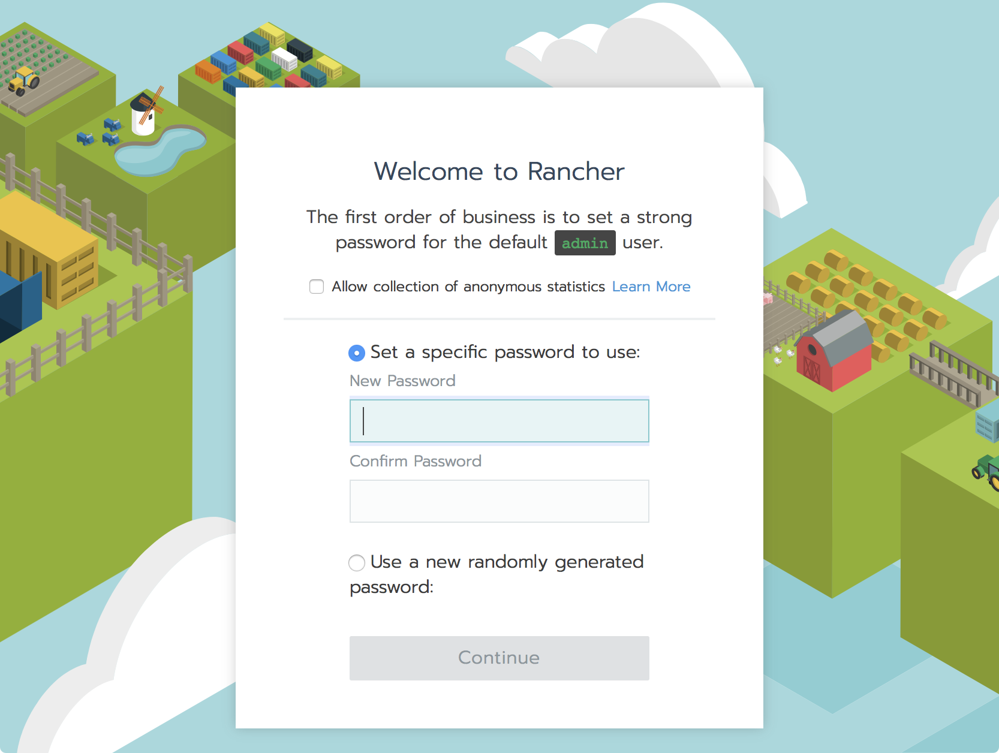
The server URL entry form will appear, which should already show your Rancher server’s IP address. Click the Save URL button to continue:
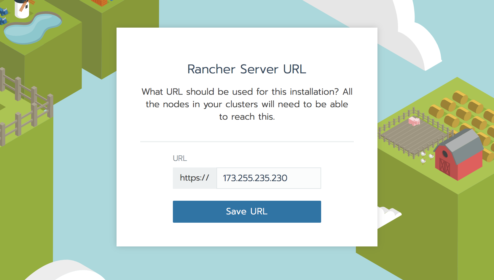
The default home page for your Rancher app will appear. This page normally displays a list of all of your Kubernetes clusters. Since you have not created a cluster yet, a placeholder image is shown instead:
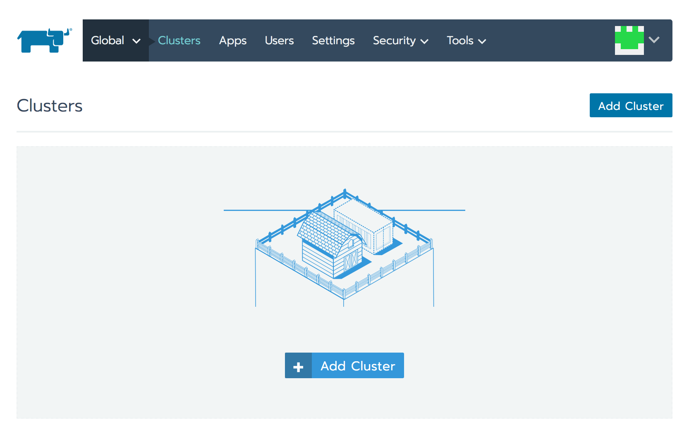
Note
The main interface for navigating Rancher is via the blue navigation bar that spans the top of the page. The items in this navigation bar will change when you view different parts of the application.Before you can create your first cluster, you will need to enable Linode’s integration with Rancher. Proceed to the Activate the Linode Node Driver for Rancher section.
Activate the Linode Node Driver for Rancher
Rancher includes two kinds of integrations with hosting providers:
A cluster driver allows Rancher to create and administer a cloud host-launched Kubernetes cluster. In a host-launched Kubernetes cluster, your hosting platform operates the new cluster’s control plane and etcd components, while you provision and configure your worker nodes (via Rancher as well).
A node driver allows Rancher to create and administer a Rancher-launched Kubernetes cluster. Rancher will directly provision your control plane and etcd nodes along with your worker nodes. Your cloud host does not manage your control plane and etcd components.
Rancher is shipped with a node driver for Linode, but it is inactive by default. To activate the Linode node driver:
Click on Tools from the main navigation bar and select Drivers from the dropdown menu.
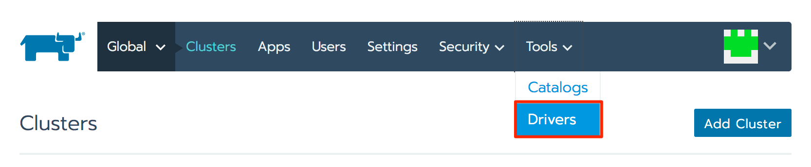
Click on the Node Drivers tab:
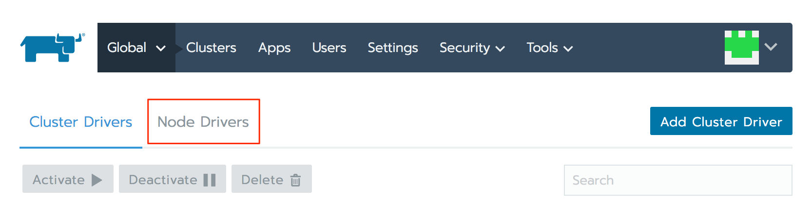
Scroll down to Linode’s driver. Click the corresponding more options ellipsis and click on the Activate item in the dropdown menu that appears:
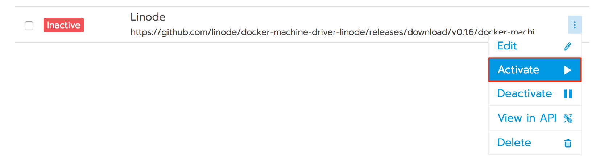
Activating the Linode node driver does not install the Linode CCM and CSI for your new clusters. Further instructions for enabling these features are listed in the Deploy a Kubernetes Cluster section. You should wait until the node driver is listed as Active before moving on.
 What are the Linode CCM and CSI?
What are the Linode CCM and CSI?
Deploy a Kubernetes Cluster
Add a Node Template
Node templates are used by Rancher to provision cluster nodes. When you create a node template, you can specify configuration parameters, like the region, instance type, and Linux image that should be used for any node in the cluster. You can set different templates for different clusters, which allows you to choose the right resources for your different workloads.
Before provisioning your cluster, you will need to add the node template it will use. To add a node template:
Click on your User Avatar icon in the upper right-hand corner and select Node Templates.
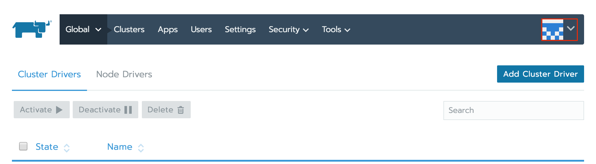
On the Node Templates page, click on the Add Template button in the upper right-hand corner.
The Add Node Template dialog will appear, select Linode from the list of providers and enter in your Linode APIv4 token in the API Token field.
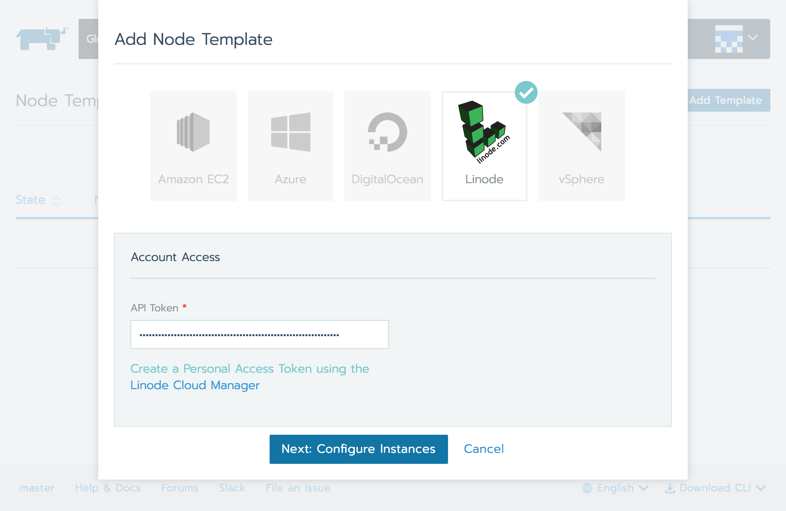
Click on the Next: Configure Instances button.
Another dialog will appear which accepts options for your new node template. Under the Instance Options section, set the preferred region, instance type, and Linux image for your nodes, along with any Cloud Manager tags you’d like to apply to your nodes.
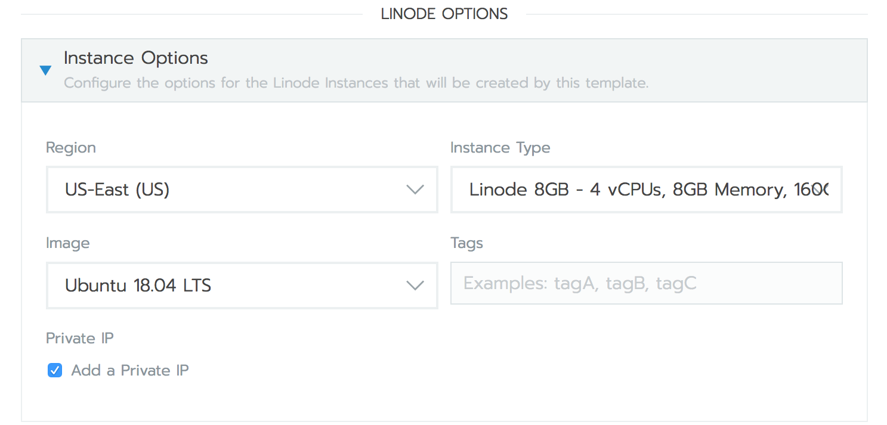
Note
We recommend that you choose a Linode 2GB or higher for the nodes in a Kubernetes cluster. The Block Storage service has not been deployed to our Atlanta (US-Southeast) data center. Since this guide will use Block Storage Volumes in its example cluster, please choose a different region when creating your node template.Enter a name for your template. This can be arbitrary, but it’s helpful to call it something that will help you remember the options you set in the template form, like
newark-linode8gb-ubuntu1804.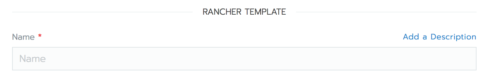
When finished with the form, click the Create button.
Note
All other node template settings are optional and will not be used in this guide. You do not need to set a password for the nodes created through this template; Rancher will generate one automatically. As well, Rancher provides command-line access to the Kubernetes API for your cluster, so logging into your nodes generally isn’t needed.You will be returned to the Node Templates page where your node template will be visible.
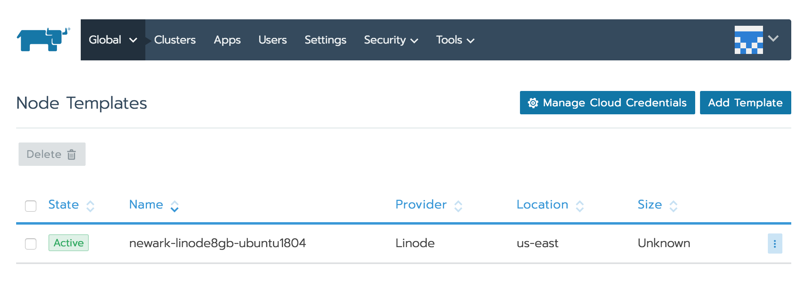
Provision a Cluster
Return to the home page by hovering over the Global dropdown menu in the main navigation bar and then clicking the Global menu item:
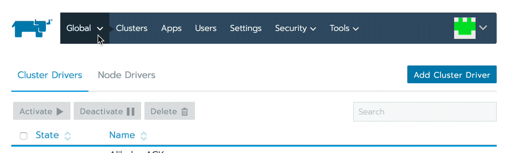
Click on the Add Cluster button. The Add Cluster form will appear.
Select the Linode driver from the From nodes in an infrastructure provider section:
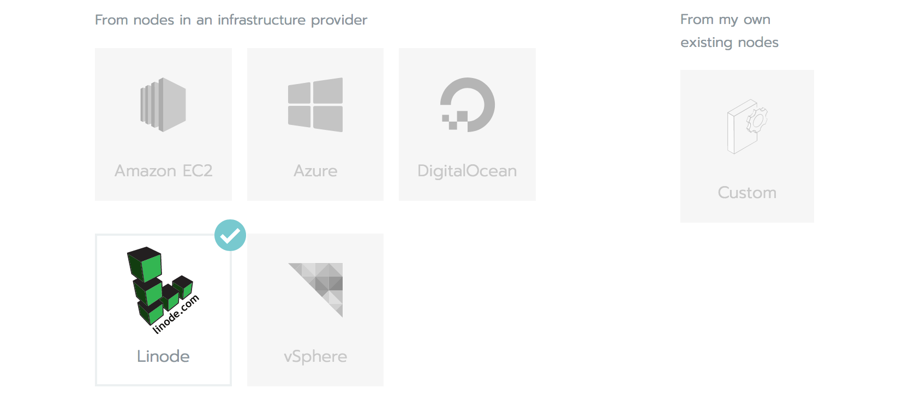
Enter a name for your cluster in the Cluster Name field. The name for our example cluster will be
example-cluster.In the Node Pools section, under the Template column, you should see the node template you created in the previous section of this guide. Set a value for the Name Prefix field. For each Linode that Rancher creates for that node pool, the Linode will be prefixed according to the name you set (e.g. if the name prefix is
example-cluster-, then your Linodes will be namedexample-cluster-1,example-cluster-2, etc.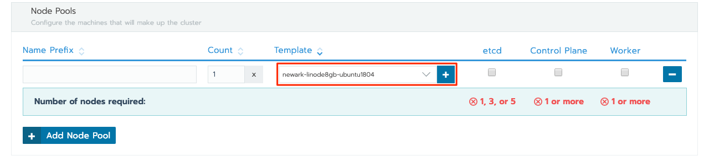
A node pool is Rancher’s method for creating the nodes (Linodes) that form your cluster. You specify how many nodes should be in a node pool, along with the node template for those nodes in that pool. If Rancher later detects that one of the nodes has lost connectivity with the cluster, it will automatically create a new one.
When configuring a node pool, you also specify which of your cluster’s components operate on the nodes in the pool. For example, you can have one pool that only runs your cluster’s etcd database, another pool which only runs your control plane components (the Kubernetes API server, scheduler, and controller manager), and a third pool which runs your application workloads.
Set the value for the Count field to
3. Rancher will create 3 Linodes for the node pool.Toggle on the checkboxes for etcd, Control Plane, and Worker. In our example cluster, the nodes for this node pool will run each of these components. Your configured form should look like the following:
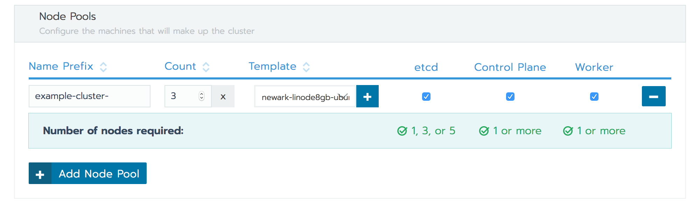
Note
When you set up a cluster for production, avoid having a node pool that runs your workloads alongside your etcd or control plane components. An example node pool configuration which splits the etcd and control plane components from your workloads would look like the following:
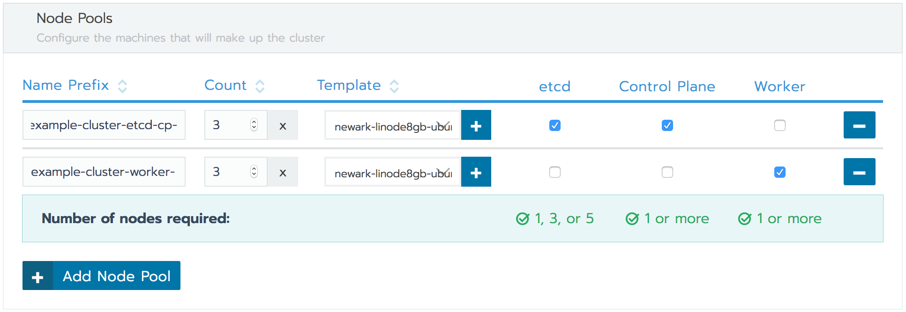
Review Rancher’s Production Ready Cluster documentation for more guidance on setting up production clusters.
The last part in creating your cluster is to configure Linode’s CCM and CSI. In the Cluster Options section, toggle on the Custom option for the Cloud Provider field, then click on the Edit as YAML button above the section.
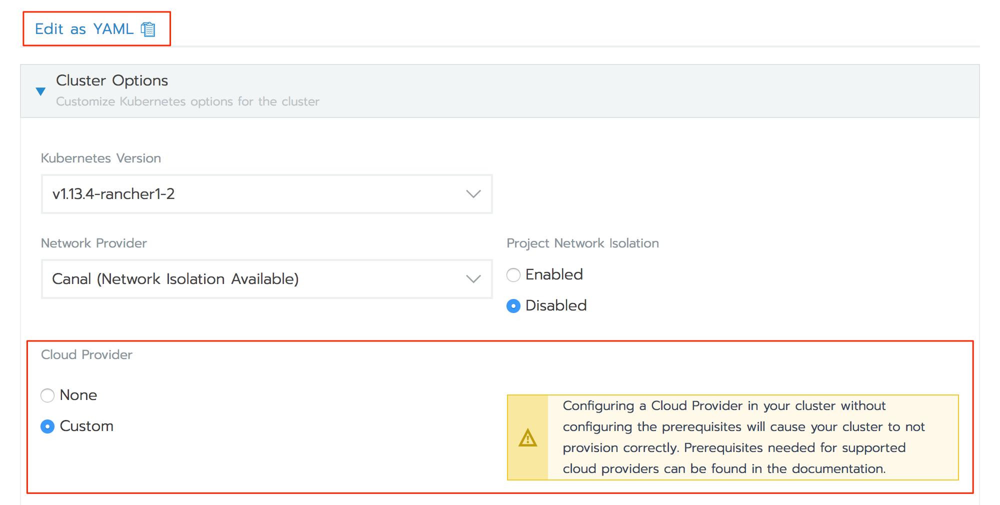
A text editor will appear:
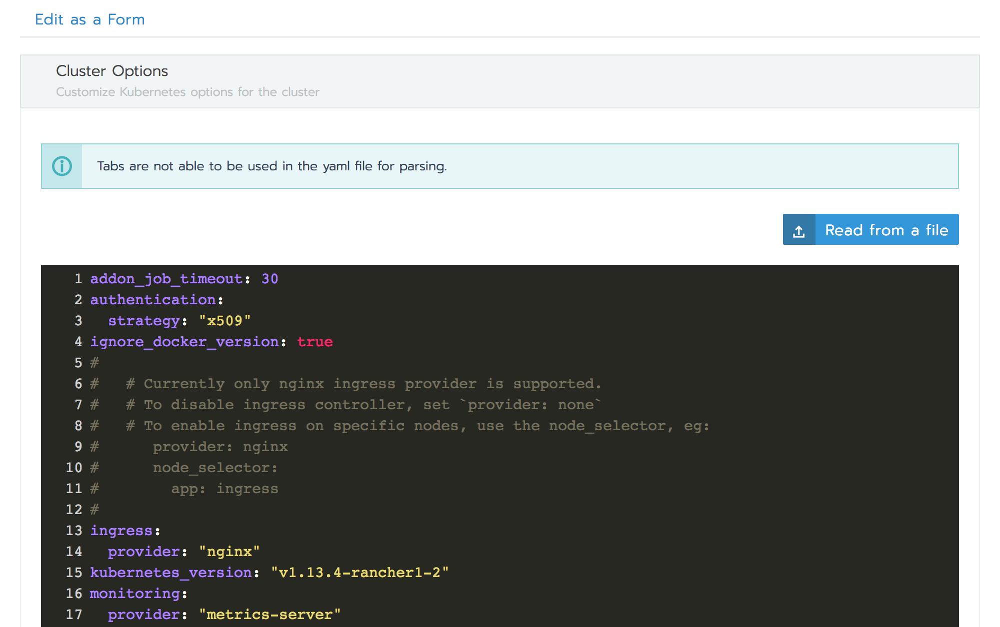
Insert the following snippet before the first line in the editor (above the
addon_job_timeoutdeclaration):-
1 2 3 4 5 6 7 8 9 10 11 12 13addons_include: - https://linode.github.io/rancher-ui-driver-linode/releases/v0.2.0/linode-addons.yml addons: |- --- apiVersion: v1 kind: Secret metadata: name: linode namespace: kube-system stringData: token: "..." region: "..." ---
-
Insert your Linode APIv4 token in the
tokenfield from this snippet. Also, enter the label for your node template’s data center in theregionfield. This label should be lower-case (e.g.us-eastinstead ofUS-East).Scroll down in the editor to the
servicessection. Remove the existingservicessection and replace it with this snippet:-
1 2 3 4 5 6 7 8 9 10 11 12 13 14 15 16 17 18 19 20 21 22 23 24 25services: etcd: backup_config: interval_hours: 12 retention: 6 creation: "12h" extra_args: heartbeat-interval: 500 election-timeout: 5000 retention: "72h" snapshot: true kube-api: always_pull_images: false pod_security_policy: false service_node_port_range: "30000-32767" extra_args: feature-gates: "PersistentLocalVolumes=true,VolumeScheduling=true,CSINodeInfo=true,CSIDriverRegistry=true,BlockVolume=true,CSIBlockVolume=true" kubelet: fail_swap_on: false extra_args: cloud-provider: "external" feature-gates: "PersistentLocalVolumes=true,VolumeScheduling=true,CSINodeInfo=true,CSIDriverRegistry=true,BlockVolume=true,CSIBlockVolume=true" kube-controller: extra_args: cloud-provider: "external"
-
After you finish with both of these steps, your YAML should resemble this completed snippet.
Note
Avoid copying and pasting the entire completed snippet example, as it has some variable values outside of the
addons_include,addons, andservicessections that may not match your deployment (e.g. thekubernetes_versionsetting).Instead, compare your YAML file with the completed example to ensure you have inserted the
addons_include,addons, andservicessections in the right places.Click the Create button below the YAML editor. You will be returned to the global home page, and your new cluster will be listed (in the Provisioning state):
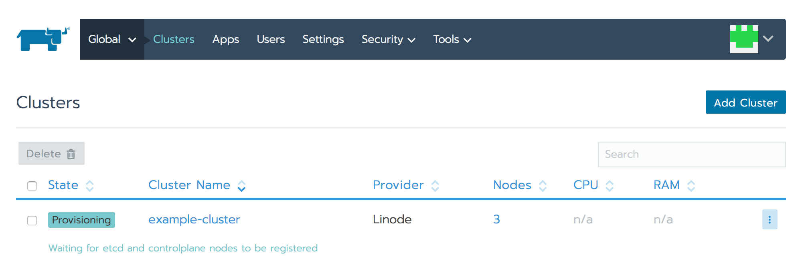
If you visit the list of your Linodes in the Linode Cloud Manager, you will see the new nodes in your cluster:
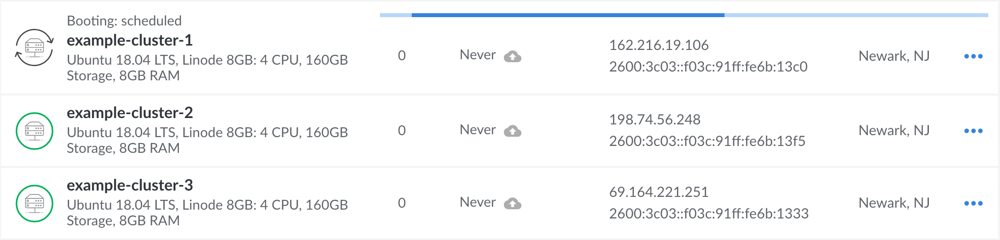
Note
If your nodes do not not appear in the Linode Cloud Manager as expected, then you may have run into a limit on the number of resources allowed on your Linode account. Contact Linode Support if you believe this may be the case.
Explore the New Cluster
To inspect your new cluster, click on its name in the global list of clusters:
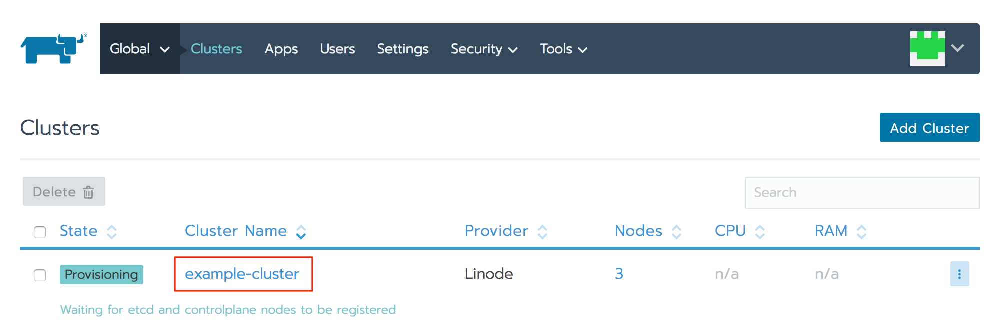
Or, hover over the Global menu and then select the name of the new cluster:
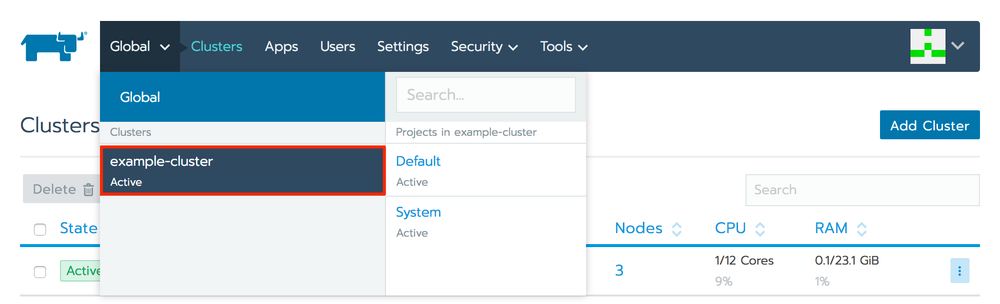
Your cluster’s dashboard will appear. If it is still provisioning, it will display a placeholder graphic:
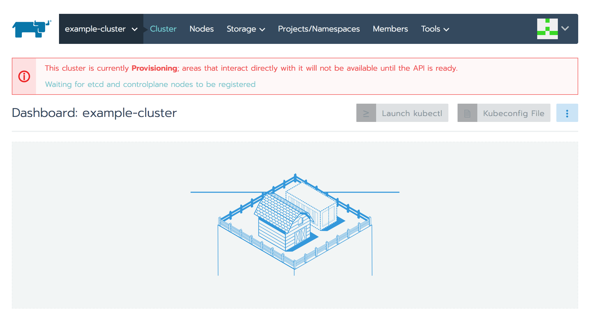
Note that the items in the main navigation bar will change when viewing a cluster:
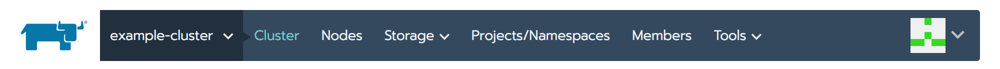
Click on the Nodes main menu item:
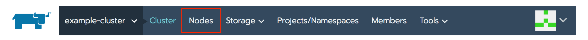
A list of your cluster’s nodes will appear. If they are still provisioning, they will be labelled with the most recent step in the provisioning sequence:
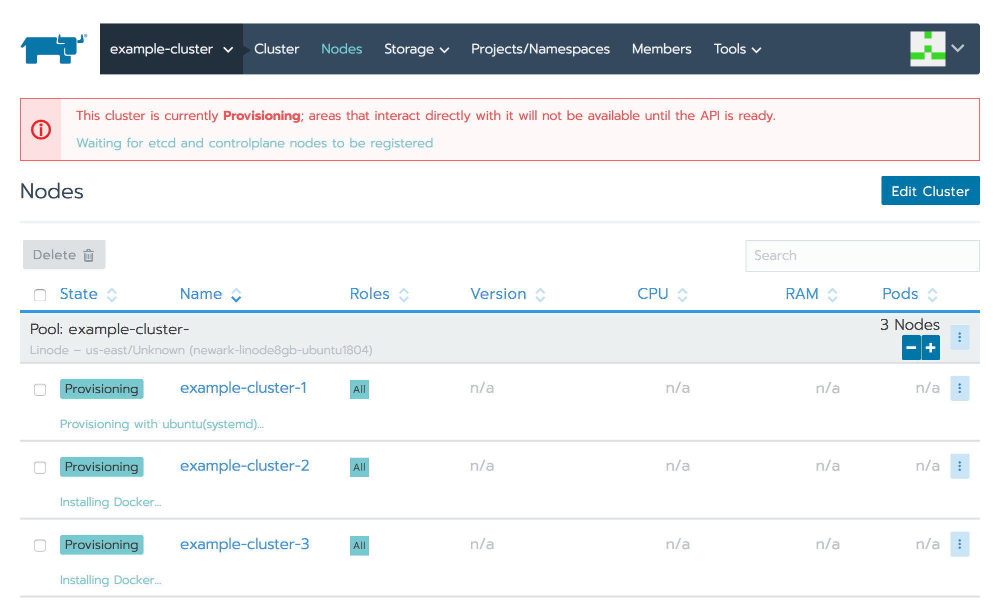
When the nodes finish provisioning, the Active label will be displayed:
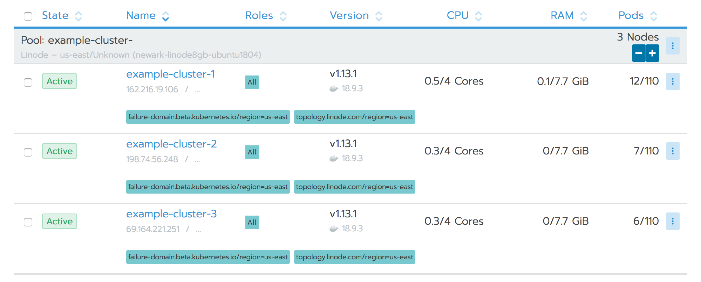
When your nodes have finished provisioning, click the Cluster item in the navigation bar to navigate back to the dashboard. A summary of the cluster’s resource usage is displayed:
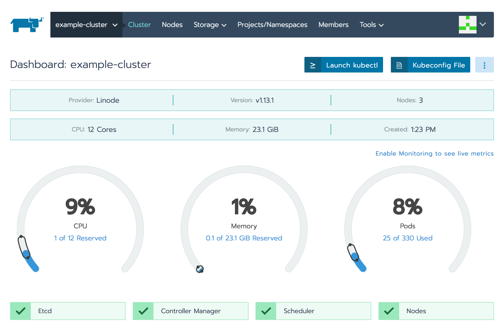
Load the Kubectl Command Line
In addition to managing your cluster via Rancher’s interactive UI, Rancher also provides command-line access to your cluster’s Kubernetes API:
From your cluster’s dashboard, click the Launch kubectl button:
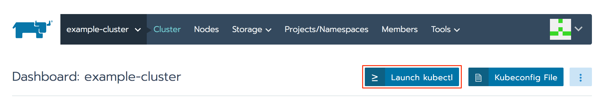
A new dialog will appear with a command-line prompt. You are able to use kubectl to interact with your cluster:
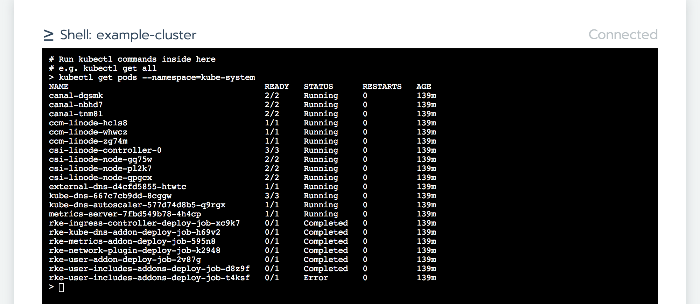
Alternatively, you can use the
kubectlCLI from your local computer if you have it installed. From your cluster’s dashboard in Rancher, click on the Kubeconfig File button: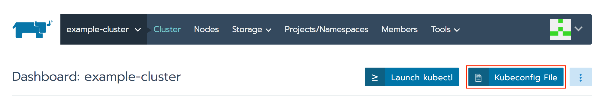
A new dialog will appear with the correct kubeconfig for your cluster. Copy the contents of the configuration to a file on your computer. Then, pass it as an option when using the CLI:
kubectl --kubeconfig /path/to/your/local/kube.config get pods
Rancher Projects
Rancher introduces an organizational concept called projects. Projects group together Kubernetes namespaces and allows you to perform actions across all namespaces in a project, like adjusting administrative access to them.
To view your cluster’s projects, click on the cluster selection menu in Rancher’s navigation bar, then hover over your cluster in the dropdown menu’s Clusters list:
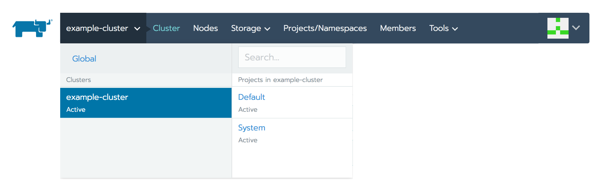
A new cluster created through Rancher will have a Default project and a System project.
Options for creating new projects are exposed under the navigation bar’s Projects/Namespaces item:
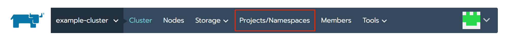
However, this guide will deploy its example app to the Default project.
Navigate to the Default project. Click on the cluster selection menu in Rancher’s navigation bar, then hover over your cluster in the dropdown menu’s Clusters list, and then click on the Default item that appears:
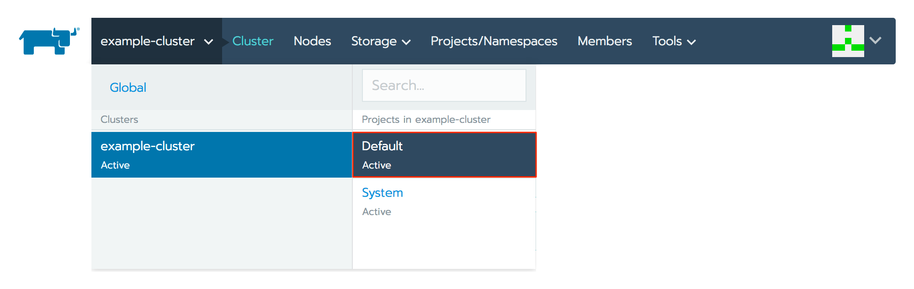
The Workloads view for the project will appear, but it will be empty, as no apps have been deployed yet. Also, note that the items in the navigation bar will change when viewing a project:
Deploy an App from the Rancher App Library
Rancher provides a library of apps which offer easy setup through Rancher’s UI. The apps in this curated library are based on existing Helm charts.
A Helm chart is a popular format for describing Kubernetes resources. Rancher extends the Helm chart format with some additional configuration files, and this extended packaging is referred to as a Rancher chart. The additional information in the Rancher chart format is used to create interactive forms for configuring the app through the Rancher UI.
NoteIt is possible to enable more app catalogs than just Rancher’s curated library, including a catalog of stable Helm charts. These other apps will not feature Rancher’s easy setup forms and will instead require manual entry of configuration options.
To test out deploying an app on your new cluster, launch the WordPress app from the Rancher library. This app will also take advantage of Linode’s Block Storage, NodeBalancer, and DNS services (via the CCM and CSI):
From the Default project in your new cluster, click on the Apps item in the navigation bar:
The Apps view for your project will appear, but it will show a placeholder image because no apps have been deployed yet. Click on this view’s Launch button.
A list of apps will appear. Scroll down to the WordPress app and click its View Details button:
The setup form for the WordPress app will appear. In the Wordpress Settings section, enter a username, password, and email for your WordPress admin user:
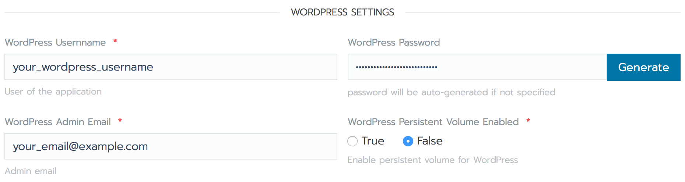
Note
Avoid using symbols in the password you enter, as some symbols can cause syntax errors for this Rancher chart.In the Database Settings section, enter a password for WordPress’ database user. Then set MariaDB Persistent Volume Enabled to True and select the linode-block-storage option from the Default StorageClass for MariaDB dropdown menu:
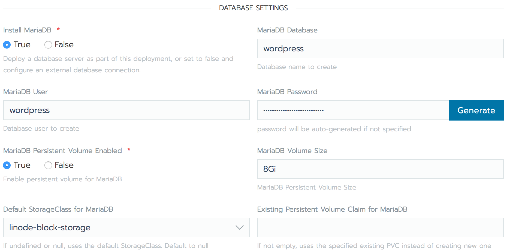
These settings will result in your database deployment keeping its data in a Linode Block Storage Volume.
Note
The default value for the MariaDB Volume Size field is 8GiB, but the minimum size for a Block Storage Volume is 10Gib. The Linode CSI will automatically upgrade any persistent volume claims that are smaller than 10GiB to 10GiB.In the Services and Load Balancing section, set Expose app using Layer 7 Load Balancer to False, then choose the L4 Balancer option from the WordPress Service Type dropdown menu:
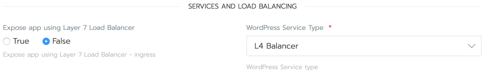
Selecting the L4 Balancer option will result in the creation of a Linode NodeBalancer.
Click the Launch button at the bottom of the form.
You will be directed back to the project’s Apps view, where your new WordPress app will be listed. The listing will show a red bar with the number 2 below it. 2 represents the number of pods in the app, and the red color indicates that they are not available yet.
Click on the name of the app:
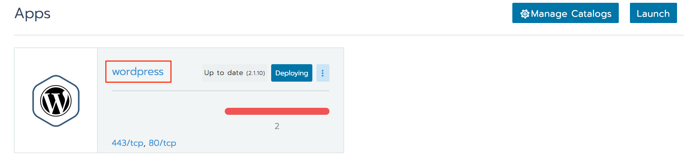
A detail view for the app will appear. The Workloads section will show the MariaDB and WordPress deployments for your app. They may still be in the middle of provisioning:
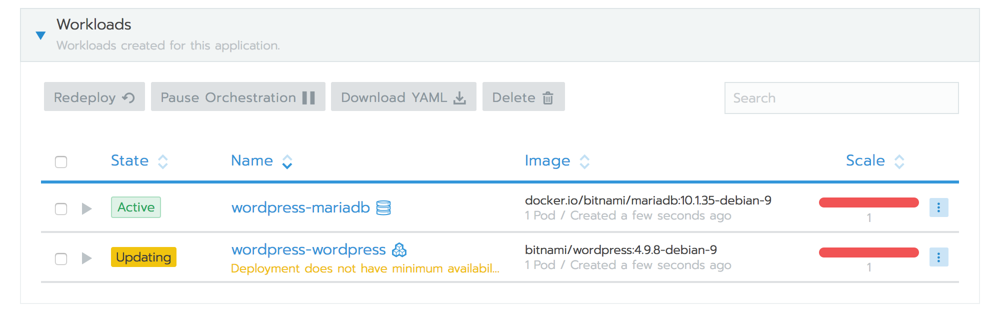
When the deployments finish provisioning, they will display the Active label and the red bars under the Scale column will turn green.
The Endpoints section displays the address of the NodeBalancer that was created for your app. After your deployments have finished provisioning, click on the HTTP NodeBalancer endpoint:
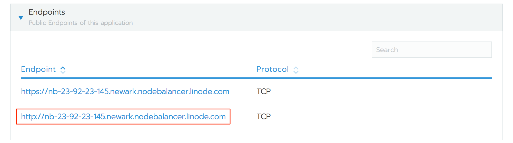
Your WordPress site should open in a new browser tab.
Visit the wp-login.php page on your site (e.g. at
http://your-nodebalancer-name.newark.nodebalancer.linode.com/wp-login.php). You should be able to login with the WordPress admin username and password you specified earlier in the app’s form.Note
If you view the Volumes and NodeBalancers areas of the Linode Cloud Manager, you should see the new Volume and NodeBalancer that were created for this app. They will have random alphanumeric names likepvc77e0c083490411e9beabf23c916b1.
Set Up DNS for the WordPress App
You can currently visit your new app from the NodeBalancer’s generic subdomain. With the Linode CCM, it’s also possible to assign a custom domain or subdomain to your app:
In the detail view for your WordPress app, scroll down to the Services section.
Click on the more options ellipsis for the wordpress-wordpress service, then click on the View/Edit YAML item in the dropdown menu that appears:
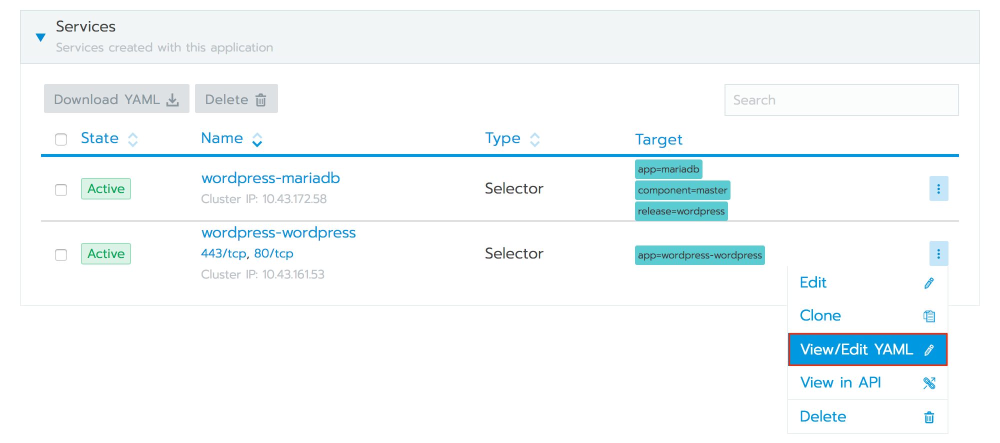
A YAML editor for the service will appear. Find the
annotationssection under themetadatasections, then insert this line:-
1 2 3metadata: annotations: external-dns.alpha.kubernetes.io/hostname: wordpress.example.com
Replace
wordpress.example.comwith the address you want to use for your app. As a reminder,example.comneeds to exist as a domain zone on your Linode account. If you’re not sure if you’ve inserted the new line in the right location, compare your YAML with this snippet of an updatedmetadatasection.-
Click the Save button below the YAML editor.
The Linode CCM will create a DNS record in your domain’s zone and automatically assign the IP of your NodeBalancer to it. If you visit the domain’s zone in the Linode Cloud Manager, the new A record should appear.
It may take some time for Linode’s DNS database to update, so if you don’t see the record show up in the Cloud Manager immediately, try refreshing it after a few minutes.
After the record becomes visible in the Cloud Manager, it can also take time for the DNS change to propagate to your local ISP. After the DNS change has propagated, you should be able to view your WordPress app by navigating to the address you set up.
Scaling your Cluster and App
Rancher makes it easy to scale the number of nodes in your cluster and to scale the number of replica pods in your app’s deployments.
Scale your Cluster
CautionThe example instructions in this section will add nodes to your cluster, which will add further billable services to your account. You can read these instructions without performing them on your own account if you prefer.
Return to the home page by hovering over the Global dropdown menu in the main navigation bar and then clicking the Global menu item:
Your cluster will show up on the page that appears. Click on the more options ellipsis corresponding to the cluster and then click on the Edit item from the dropdown menu:
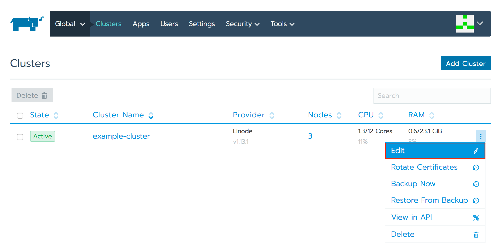
The same form that you completed when creating your cluster will appear. In the Node Pools section, increase the count of your pool:
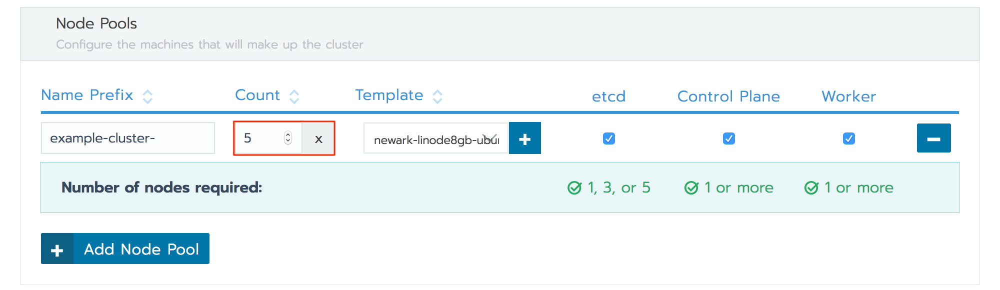
Note
Your example cluster’s nodes all run etcd, so you can only scale the node pool to a count of 1, 3, or 5. If you had a separate node pool for your workloads, you could scale it freely to any count.Click the Save button at the bottom of the form. You will be redirected to the dashboard for the cluster.
The dashboard will report that the cluster is updating. When the new nodes have finished provisioning and are registered with Kubernetes, the dashboard will show that all components and nodes are responding normally.
Scale your App
Rancher also provides an easy way to scale your app’s deployments:
Navigate to the Default project of your cluster:
Click on the Apps item in the navigation bar:
Click on the name of the WordPress app:
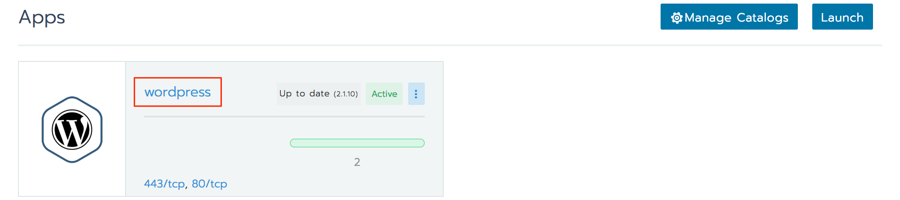
In the Workloads section, click on the wordpress-wordpress link in the Name column for that deployment:
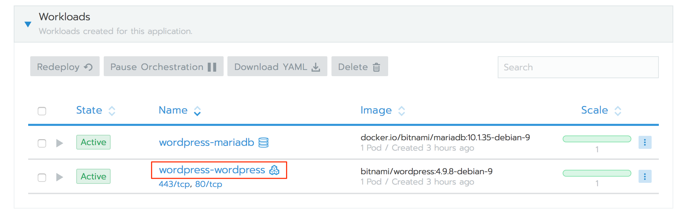
A detail view for the deployment will appear. In the Config Scale section at the top, click on the + button to increase the replica count for the deployment by one (to a total of 2):
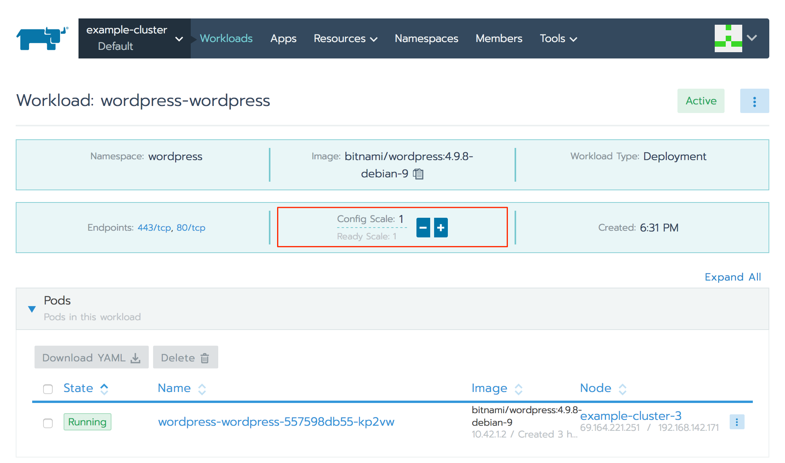
A second pod will appear in the Pods section on this page, and there will be an Updating label at the top of the page. You may see a series of warning messages about the new pod not being available. Eventually, the new pod will be labelled as Running.
Set Up GitHub Authentication
In addition to manually creating users that can access your Rancher application, you can also enable GitHub authentication and then invite GitHub users:
From the Global home page, click on the Security item in the navigation bar and then select Authentication from the dropdown menu:
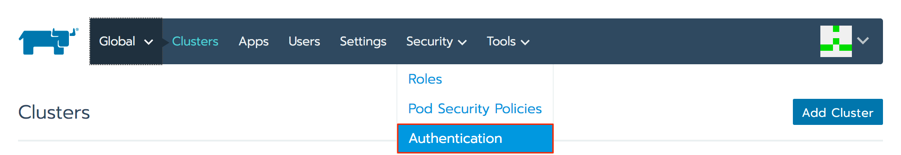
Choose GitHub from the authentication options listed:
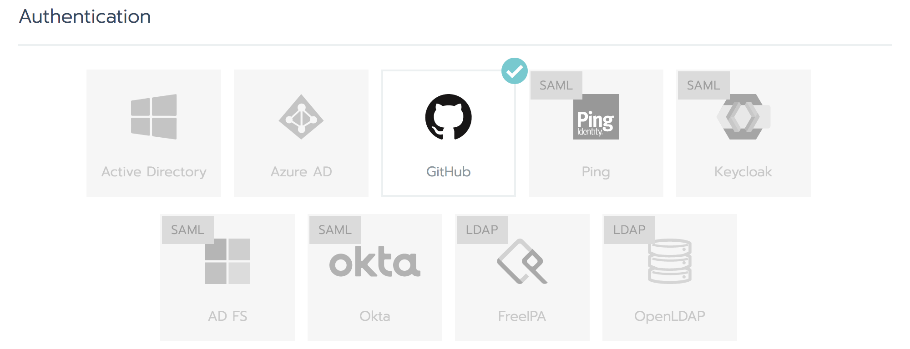
In a new browser window, visit the developer settings of your account on the GitHub website. Click the Register a new application button under the OAuth Apps section.
Fill out the form that appears. Use the values that Rancher lists under the Authentication page that you have open in your original browser window, then click the Register application button:
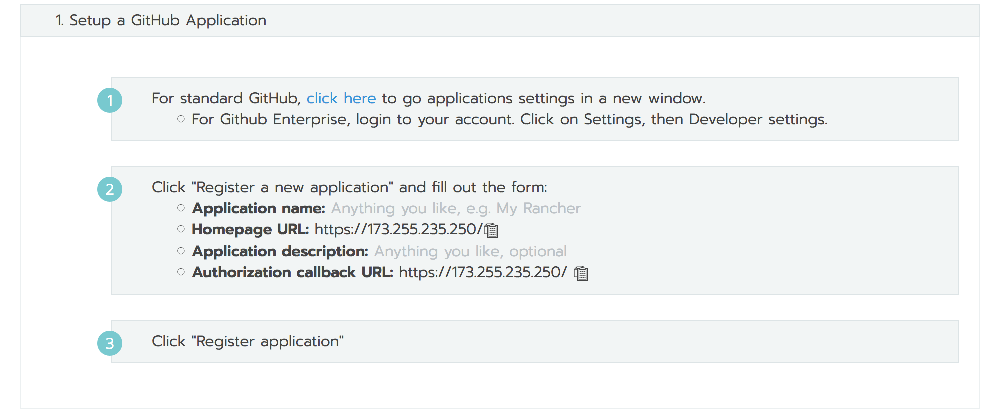
You will be directed to the detail view for your new OAuth application. Copy the ClientID and Client Secret values displayed on this page. Paste these into the form at the bottom of Rancher’s Authentication page:
Click the Authenticate with GitHub button. A new browser window will appear that asks you to confirm the access request.
Confirm the access request. Rancher will show a new page with further options for controlling access to your Rancher site.
To invite GitHub users to your Rancher site, enter them in the search field in the Site Access section and select the correct user from the search results. Then, click the Save button:
Removing the Cluster
To remove the cluster:
Navigate to the Global home page.
Click on the more options ellipsis for your cluster, then select the Delete option from the dropdown menu that appears:
Confirm in the Linode Cloud Manager that all the Linodes, Volumes, NodeBalancers, and DNS records from the cluster are deleted.
More Information
You may wish to consult the following resources for additional information on this topic. While these are provided in the hope that they will be useful, please note that we cannot vouch for the accuracy or timeliness of externally hosted materials.
Join our Community
Find answers, ask questions, and help others.
This guide is published under a CC BY-ND 4.0 license.